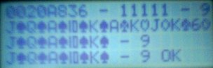
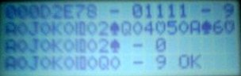
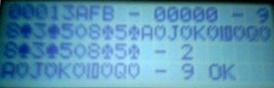

|
 |
 |
 |
|
|||||||||||||||||||||||||||||||||||||||||||||||||||||||||||||||||||
ScoringNow that the hand is dealt or drawn, it's time to score it. There is surprisingly little you need to know about a poker hand in order to score it. Only five characteristics need to be found:
|

One Chip Video Poker Project |
||||||||||||||||||||||||||||||||||||||||||||||||||||||||||||||||||
|
Once you know these, the following table shows how they determine the score. In it, values marked “X” mean that it doesn't matter what value that characteristic has. The osbervant reader, though, will have figured out that any hand that is a flush or straight cannot have any pairs in it, and vice versa.
|
|||||||||||||||||||||||||||||||||||||||||||||||||||||||||||||||||||
Coding DetailsHere's pseudocode for finding these characteristics. The assembly code differs from it in minor ways but this is how it runs. Flush Flag
Number of Pairs / Pair Rank
Straight Flag / Lowest Rank
Finding High & Low card:
A happy side-effect of this process is that locard is used in spotting royal flushes. Find the scoreEquipped with the characteristics, you can use the table above to figure out what kind of hand you've got. At this point, if it's the initial deal, report the score and await the player's discard instructions. If it's after the draw, calculate and deliver the FILTHY LUCRE if any is forthcoming. |
|||||||||||||||||||||||||||||||||||||||||||||||||||||||||||||||||||
The Scoring Test ProgramThe unit test for this step is a good illustration of how the PC can guide the PIC. Also, since the unit test on dealing didn't test the card-drawing code, it seemed appropriate to jam it in here. using the PC-side C poker simulator, generate hands. Start at seed 0.
This should yield, then, a set of 320 seeds: 10 different scores times 32 draw combinations. On the PIC side, the test program tries out each of these 320 seeds, knowing the heldmask and the expected score. It deals the hand using the random seed, then draws according to the heldmask, then scores the hand. If the score returned by the scoring subroutine matches the expected score, all's well. |

Here's a screenshot from the score testing program. On the top, we see the seed that was used to deal the hand, followed by the heldmask (here, all cards held), followed by the expected score once the draw is applied. The second line shows the 10-card hand drawn. On the third line, there is the pat hand and its score, then finally on the last line there's the drawn hand and its score. Here's a bit more typical situation as far as royal flushes are concerned – in the pat hand, all but one card is from the royal flush in diamonds. Faced with this, a wise player would hold the 4 Royal Flush cards and hope for the best. In this case, it works out! Note that the held-mask reads backwards from the hand display; the non-held card is number 5 which is the first bit shown. And here's an interesting case indeed – a hand which, as dealt, is a respectable Two Pair – but if you toss all of them, the drawn five cards form a Royal Flush. Things like this happen, and there's no way to know! How perverse it is, our world. |
The scoring test program didn't only look at Royal Flushes, but since they're so rare in gameplay it's kind of fun to see them so I featured them here. The first shown is the coveted PAT ROYAL FLUSH. If you're very good you may one day see one. You can also see one if you're evil and rig the code to spit one out. |
|||||||||||||||||||||||||||||||||||||||||||||||||||||||||||||||||
|
 Page Top Page Top
|